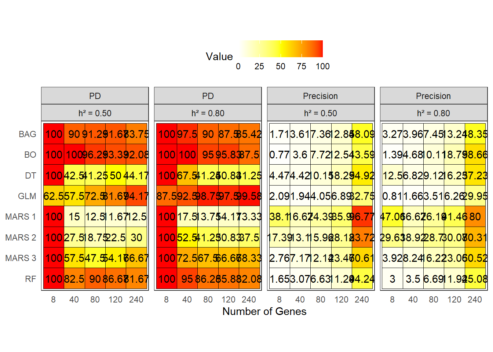
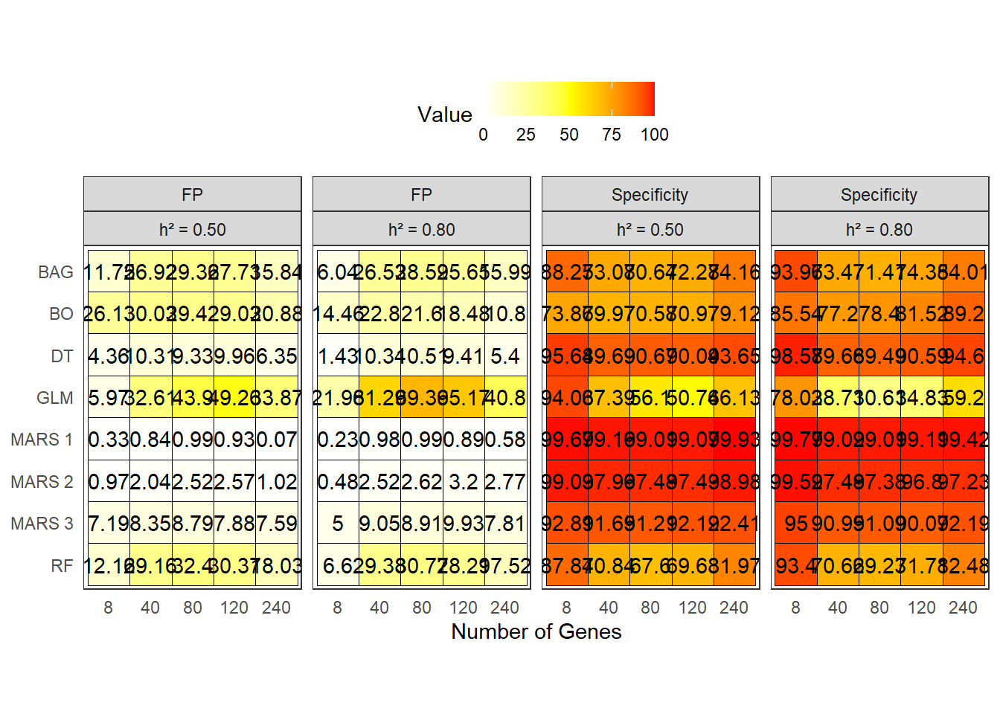
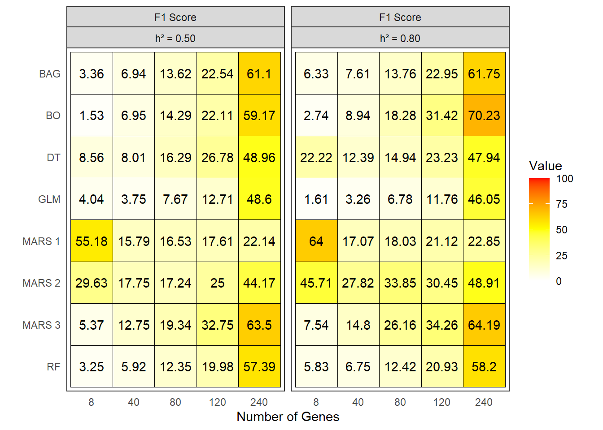

Last updated: 2025-07-29
Checks: 6 1
Knit directory:
Machine-learning-e-redes-neurais-artificiais-no-melhoramento-genetico-do-cafeeiro/
This reproducible R Markdown analysis was created with workflowr (version 1.7.1). The Checks tab describes the reproducibility checks that were applied when the results were created. The Past versions tab lists the development history.
The R Markdown file has unstaged changes. To know which version of
the R Markdown file created these results, you’ll want to first commit
it to the Git repo. If you’re still working on the analysis, you can
ignore this warning. When you’re finished, you can run
wflow_publish to commit the R Markdown file and build the
HTML.
Great job! The global environment was empty. Objects defined in the global environment can affect the analysis in your R Markdown file in unknown ways. For reproduciblity it’s best to always run the code in an empty environment.
The command set.seed(20250709) was run prior to running
the code in the R Markdown file. Setting a seed ensures that any results
that rely on randomness, e.g. subsampling or permutations, are
reproducible.
Great job! Recording the operating system, R version, and package versions is critical for reproducibility.
Nice! There were no cached chunks for this analysis, so you can be confident that you successfully produced the results during this run.
Great job! Using relative paths to the files within your workflowr project makes it easier to run your code on other machines.
Great! You are using Git for version control. Tracking code development and connecting the code version to the results is critical for reproducibility.
The results in this page were generated with repository version 2a4c3ea. See the Past versions tab to see a history of the changes made to the R Markdown and HTML files.
Note that you need to be careful to ensure that all relevant files for
the analysis have been committed to Git prior to generating the results
(you can use wflow_publish or
wflow_git_commit). workflowr only checks the R Markdown
file, but you know if there are other scripts or data files that it
depends on. Below is the status of the Git repository when the results
were generated:
Ignored files:
Ignored: .Rproj.user/
Ignored: analysis/figure/
Ignored: analysis/modelos_mistos_dados_reais.Rmd
Ignored: data/dados_reais/Fenótipos 2014_2015_2016_C.arabica (1).xlsx
Ignored: data/dados_reais/Fenótipos 2014_2015_2016_C.arabica.xlsx
Ignored: data/dados_reais/FiltStep1_minQ10.0_minDP3_DPrange15-maxMeanDepth750_miss0.4_maf0.01_mac1_EMB_291701_SNPs_Raw.vcf.012.012
Ignored: data/dados_reais/FiltStep1_minQ10.0_minDP3_DPrange15-maxMeanDepth750_miss0.4_maf0.01_mac1_EMB_291701_SNPs_Raw.vcf.012.012.indv
Ignored: data/dados_reais/FiltStep1_minQ10.0_minDP3_DPrange15-maxMeanDepth750_miss0.4_maf0.01_mac1_EMB_291701_SNPs_Raw.vcf.012.012.pos
Ignored: data/dados_reais/FiltStep1_minQ10_minDP3_DPrange15-750_miss0.4_maf0.01_mac1_EMB_291701_filt1_snps_RAW.012.indv.txt
Ignored: data/dados_reais/FiltStep1_minQ10_minDP3_DPrange15-750_miss0.4_maf0.01_mac1_EMB_291701_filt1_snps_RAW.012.pos.txt
Ignored: data/dados_reais/FiltStep1_minQ10_minDP3_DPrange15-750_miss0.4_maf0.01_mac1_EMB_291701_filt1_snps_RAW.012.txt
Ignored: data/dados_reais/fpls-09-01934.pdf
Ignored: data/dados_reais/plants-13-01876-v2.pdf
Ignored: output/BLUPS_par_mmer.Rdata
Ignored: output/blups_all_wide.csv
Ignored: output/gwas_combined_results.rds
Ignored: output/gwas_results.rds
Ignored: output/imp.tot.RData
Ignored: output/importance_ML.rds
Ignored: output/importance_ML_mean.rds
Ignored: output/manhattan_BM.tiff
Ignored: output/manhattan_Cer.tiff
Ignored: output/manhattan_Prod.Cor.tiff
Ignored: output/mean_pheno.csv
Ignored: output/mod.RDS
Ignored: output/plot_lddecay.Rda
Ignored: output/pred_mod.RDS
Ignored: output/real_lddecay.tiff
Ignored: output/real_results_consolidated_10r_3f.xlsx
Ignored: output/real_results_consolidated_5r_5f.xlsx
Ignored: output/res.RDS
Ignored: output/result_sommer_pl_geracao_random.RDS
Ignored: output/result_sommer_random.RDS
Ignored: output/results_cv_GBLUP_a.rds
Ignored: output/results_cv_GBLUP_ad.rds
Ignored: output/results_cv_GBLUP_ade.rds
Ignored: output/simulated_results_consolidated.xlsx
Unstaged changes:
Modified: analysis/gwas_dados_simulados.Rmd
Modified: analysis/license.Rmd
Note that any generated files, e.g. HTML, png, CSS, etc., are not included in this status report because it is ok for generated content to have uncommitted changes.
These are the previous versions of the repository in which changes were
made to the R Markdown (analysis/gwas_dados_simulados.Rmd)
and HTML (docs/gwas_dados_simulados.html) files. If you’ve
configured a remote Git repository (see ?wflow_git_remote),
click on the hyperlinks in the table below to view the files as they
were in that past version.
| File | Version | Author | Date | Message |
|---|---|---|---|---|
| Rmd | 76b5e77 | WevertonGomesCosta | 2025-07-28 | add scripts .Rmd to gws and gwas for real and simulated data |
| Rmd | 60e67cf | WevertonGomesCosta | 2025-07-24 | chance dados_simulados.Rmd to gws ans gwas_dados_simulados.Rmd |
This document provides an overview of the analysis performed to assess the importance of markers for QTL detection using machine learning methods. The analysis includes data preparation, trait importance calculation, and visualization of results.
The traits importance data was obtained by script in Genomic-prediction-through-machine-learning-and-neural-networks-for-traits-with-epistasis
library(metan) # for the `metan` package
library(tidyverse) # for data manipulation and visualization
library(ggrepel) # for text label positioning
library(ggnewscale) # for multiple color scales in ggplot2
library(ggthemes) # for additional ggplot2 themes
library(gridExtra) # for arranging multiple ggplot2 plotsThe results are stored in the imp.tot object. The
snpsOfInterest object contains the SNPs of interest, and
the results_gwas object contains the results of the GWAS
analysis.
# A tibble: 6 × 5
Overall marker n.fold method variable
<dbl> <chr> <chr> <chr> <chr>
1 100 601 1 MARS L 1
2 91.6 1797 1 MARS L 1
3 82.0 1396 1 MARS L 1
4 73.3 2607 1 MARS L 1
5 64.8 2196 1 MARS L 1
6 54.7 1005 1 MARS L 1 # Load the SNPs of interest and GWAS results
load("output/snpsOfInterest.RData")
head(snpsOfInterest) variable marker
1 1 201
2 1 602
3 1 1003
4 1 1404
5 1 1805
6 1 2206 SNP Chr Pos P.value MAF nobs H.B.P.Value Effect variable method
1 1 1 0.0 0.006491210 0.4830 1000 0.02957927 0.3398233 V1 GLM
2 2 1 0.5 0.005261302 0.4810 1000 0.02544973 0.3467606 V1 GLM
3 3 1 1.0 0.005396649 0.4815 1000 0.02588584 0.3474298 V1 GLM
4 4 1 1.5 0.011629021 0.4825 1000 0.04447452 0.3137256 V1 GLM
5 5 1 2.0 0.010304126 0.4840 1000 0.04082959 0.3196014 V1 GLM
6 6 1 2.5 0.014412682 0.4840 1000 0.05192709 0.3027587 V1 GLMOs dados de importância dos marcadores são organizados em um formato adequado para análise. A seguir, realizamos algumas transformações nos dados para facilitar a análise.
O objeto imp.tot contém a importância dos marcadores
para cada variável e método. A seguir, realizamos algumas transformações
nos dados para facilitar a análise. Como temos 10 variáveis, cada uma
com 4010 marcadores, e 11 métodos, para cada repetição e cada fold,
vamos obter uma média dos dados.
Os dados do GWAS são filtrados para incluir apenas os marcadores significativos, e o limiar de significância é definido com base no número total de marcadores.
# Definindo o limiar de significância
alpha <- 0.05
n.markers <- 4010
threshold <- alpha / n.markers
# Preparando os resultados do GWAS
results_gwas <- results_gwas %>%
rename(marker = SNP, CHR = Chr) %>%
mutate(
variable = as.numeric(str_replace(variable, "V", "")),
method = as.factor(method),
CHR = as.numeric(CHR),
marker = as.numeric(marker),
Overall = -log10(P.value)
)
# Filtrando os resultados significativos
results_gwas_sig <- results_gwas %>%
filter(P.value < threshold) %>%
mutate(sig = paste(variable, marker, sep = "_")) %>%
droplevels() %>%
select(variable, method, marker, CHR, Overall, sig)Normalizamos a importância dos marcadores para cada variável e
método, escalando os valores de Overall para um intervalo
de 0 a 10. Isso facilita a comparação entre diferentes métodos e
variáveis.
Primeiro criamos dois data frames, reg1 e
reg2, que contêm os marcadores ao redor de cada SNP de
interesse. Em seguida, unimos esses data frames para criar o data frame
region, que contém as regiões ao redor dos SNPs de
interesse.
# Criando os data frames 'reg1' e 'reg2' com os marcadores ao redor de cada SNP de interesse
reg1 <- snpsOfInterest %>%
group_by(variable) %>%
mutate(region_markers = row_number()) %>%
ungroup()
# Adicionando 8 à variável 'variable' para criar o segundo data frame
reg2 <- snpsOfInterest %>%
mutate(variable = variable + 8) %>%
group_by(variable) %>%
mutate(region_markers = row_number()) %>%
ungroup()
# Agora, criamos o data frame 'region' com os marcadores ao redor de cada SNP de interesse
distance <- 5
# Unindo os data frames 'reg1' e 'reg2' e criando as regiões ao redor dos SNPs de interesse
region <- reg1 %>%
full_join(reg2) %>%
rowwise() %>%
mutate(marker = list(seq(marker - distance, marker + distance))) %>%
ungroup() %>%
unnest(cols = marker) %>%
filter(variable %in% c(1:5, 9:13)) %>%
droplevels()Para cada região, contamos o número de genes presentes. Isso nos ajuda a entender a densidade de marcadores em cada região do QTL.
Os efeitos médios dos marcadores são calculados para cada variável e método, permitindo uma análise comparativa da importância dos marcadores entre diferentes métodos de machine learning e a atribuição de significância aos marcadores.
Nesta seção, associamos os marcadores às regiões do QTL, utilizando
os data frames normalized_imp, results_gwas,
effects_markers e region. A seguir, criamos o
data frame plot_data, que contém informações sobre os
marcadores, suas importâncias, os resultados do GWAS e as regiões de
interesse.
plot_dataO data frame plot_data é criado para associar os
marcadores às regiões do QTL, incluindo informações sobre a importância
dos marcadores, os resultados do GWAS e as regiões de interesse. Para
isso , utilizamos a função mutate para adicionar uma coluna
CHR que indica o cromossomo ao qual cada marcador pertence.
Em seguida, unimos os data frames normalized_imp,
results_gwas, effects_markers e
region para criar o data frame final
plot_data.
Além disso, adicionamos informações sobre os marcadores e regiões,
como se o marcador é destacado (is_highlight) ou anotado
(is_annotate), e criamos variáveis adicionais para
facilitar a análise.
# Associando os marcadores às regiões do QTL
plot_data <- normalized_imp %>%
mutate(
CHR = case_when(
marker <= 401 ~ 1,
marker <= 802 ~ 2,
marker <= 1203 ~ 3,
marker <= 1604 ~ 4,
marker <= 2005 ~ 5,
marker <= 2406 ~ 6,
marker <= 2807 ~ 7,
marker <= 3208 ~ 8,
marker <= 3609 ~ 9,
TRUE ~ 10
)
) %>%
full_join(results_gwas) %>%
full_join(effects_markers) %>%
full_join(region)
# Adicionando informações sobre os marcadores e regiões
plot_data <- plot_data %>%
mutate(
sig = paste(variable, marker, sep = "_"),
is_highlight = if_else(!is.na(region_markers), "yes", "no"),
is_annotate = case_when(
Overall_res > effects_markers & method != "GLM" ~ "yes",
method == "GLM" & sig %in% results_gwas_sig$sig ~ "yes",
TRUE ~ "no",
)
)Para facilitar a análise, criamos variáveis adicionais no data frame
plot_data, como herd, ngenes,
created, e is_high_anno. Essas variáveis
ajudam a categorizar os dados e a identificar as características dos
métodos e das regiões analisadas.
# Criando variáveis adicionais no data frame plot_data
plot_data <- plot_data %>%
mutate(
herd = factor(if_else(variable < 9, "50%", "80%")),
ngenes = factor(
case_when(
variable %in% c(1, 9) ~ 8,
variable %in% c(2, 10) ~ 40,
variable %in% c(3, 11) ~ 80,
variable %in% c(4, 12) ~ 120,
variable %in% c(5, 13) ~ 240,
variable %in% c(6, 14) ~ 480,
variable %in% c(7, 15) ~ 88,
variable %in% c(8, 16) ~ 160
)
),
created = factor(if_else(
ngenes %in% c(88, 160), "Simulated modified", "Simulated"
)),
is_high_anno = case_when(
is_highlight == "yes" & is_annotate == "yes" ~ 1,
is_highlight == "yes" & is_annotate == "no" ~ 2,
is_highlight == "no" & is_annotate == "yes" ~ 3,
TRUE ~ 4
),
variable = factor(variable)
)
# Reordenando os métodos
levels(plot_data$method) <- c("BAG",
"BO",
"DT",
"G-BLUP",
"MARS 3",
"MARS 1",
"MARS 2",
"MLP",
"RBF",
"RF",
"GLM")
# Reordenando os métodos para facilitar a visualização
plot_data <- plot_data %>%
mutate(method = fct_relevel(method, sort))Algumas variáveis foram criadas para simular diferentes cenários de herdabilidade e número de genes. Para a análise, vamos focar apenas nas variáveis simuladas, excluindo aquelas que não são relevantes para o nosso estudo.
# Filtrando apenas as variáveis simuladas
plot_data <- plot_data %>%
filter(created == "Simulated" & ngenes != 480) %>%
#filter(!(method %in% c("RBF", "MLP", "G-BLUP"))) %>%
droplevels()
# Reordenando as variáveis para facilitar a visualização
levels(plot_data$variable) <-
c("1", "2", "3", "4", "5", "6", "7", "8", "9", "10")Nesta seção, calculamos o índice de coincidência entre os marcadores anotados e os marcadores significativos do GWAS. A análise é feita para cada variável, método e região dos marcadores.
Primeiro, filtramos os dados para obter apenas os marcadores anotados e contamos quantos marcadores estão presentes em cada região.
A seguir, separamos os acertos (marcadores anotados que estão presentes nas regiões) e os erros (marcadores anotados que não estão presentes nas regiões).
# Separando acertos e erros
certo <- ver %>%
filter(region_markers != "NA") %>%
group_by(variable, method) %>%
reframe(n = n)
# Contando os acertos
acerto <- certo %>%
count(variable, method, name = "acerto")
# Contando os erros
errado <- ver %>%
filter(is.na(region_markers)) %>%
group_by(variable, method, CHR, region_markers) %>%
reframe("erro" = n)
# Agrupando os erros por variável e método
erro <- errado %>%
group_by(variable, method) %>%
summarise(erro = sum(erro), .groups = "drop")O data frame coinc é criado unindo os acertos e erros, e
adicionando informações sobre o número de genes em cada região. Em
seguida, calculamos os índices de Poder de Decisão (PD), Falso Positivo
(FP), Precisão, Especificidade e F1 Score para cada variável e
método.
# Unindo acertos e erros e calculando os índices
coinc <- full_join(acerto, erro) %>%
full_join(ngenes_region) %>%
mutate(
acerto = replace_na(acerto, 0),
erro = replace_na(erro, 0),
ngenes = case_when(
variable %in% c("1", "6") ~ 8,
variable %in% c("2", "7") ~ 40,
variable %in% c("3", "8") ~ 80,
variable %in% c("4", "9") ~ 120,
variable %in% c("5", "10") ~ 240
),
herd = if_else(as.numeric(variable) < 6, "h² = 0.50", "h² = 0.80"),
# Poder de Decisão (PD) = Sensibilidade
PD = round((acerto / ngenes) * 100, 2),
# Falso Positivo (FP)
FP = round((erro / (
n.markers - ngenes_region
)) * 100, 2),
# Precisão
Precision = round(acerto / (acerto + erro) * 100, 2),
# Adicionando os novos índices:
Specificity = round((((n.markers - ngenes_region) - erro
) / (
n.markers - ngenes_region
)) * 100, 2),
# Média harmônica entre precisão e Poder de Decisão ,
`F1 Score` = round(2 * (Precision * PD) / (Precision + PD), 2),
) %>%
filter(!(method %in% c("RBF", "MLP", "G-BLUP"))) %>%
droplevels()
# Selecionando as colunas relevantes para o resultado final
acerto_erro <- coinc %>%
select(variable, method, acerto, erro)
# Calculando a média de acertos e erros por variável e método
coinc %>%
select(variable, method, PD) %>%
pivot_wider(names_from = variable, values_from = PD)# A tibble: 8 × 11
method `1` `2` `3` `4` `5` `6` `7` `8` `9` `10`
<fct> <dbl> <dbl> <dbl> <dbl> <dbl> <dbl> <dbl> <dbl> <dbl> <dbl>
1 BAG 100 90 91.2 91.7 83.8 100 97.5 90 87.5 85.4
2 BO 100 100 96.2 93.3 92.1 100 100 95 95.8 87.5
3 DT 100 42.5 41.2 50 44.2 100 67.5 41.2 40.8 41.2
4 GLM 62.5 57.5 72.5 81.7 94.2 87.5 92.5 98.8 97.5 99.6
5 MARS 1 100 15 12.5 11.7 12.5 100 17.5 13.8 14.2 13.3
6 MARS 2 100 27.5 18.8 22.5 30 100 52.5 41.2 30.8 37.5
7 MARS 3 100 57.5 47.5 54.2 66.7 100 72.5 67.5 66.7 68.3
8 RF 100 82.5 90 86.7 81.7 100 95 86.2 85.8 82.1Para visualizar os índices de coincidência, utilizamos gráficos de calor (heatmaps) para representar os valores de Poder de Decisão (PD), Precisão, Especificidade e Falso positivos. A seguir, apresentamos os gráficos para cada índice.
Para visualizar o Poder de Decisão (PD) e a Precisão, utilizamos um gráfico de calor onde os valores são representados por cores. Os métodos são organizados em ordem decrescente de importância, e as regiões são facetadas por herdabilidade.
# Visualizando os índices de coincidência
coinc %>%
select(method, ngenes, herd, PD, Precision) %>%
pivot_longer(cols = 4:5) %>%
mutate(method = factor(method, levels = rev(sort(unique(method))))) %>%
ggplot(aes(
x = factor(ngenes),
y = method,
fill = value
)) +
# Adicionando os tiles (blocos da matriz)
geom_tile(color = "black") +
# Ajustando a escala de preenchimento
scale_fill_gradient2(
low = "white",
mid = "yellow",
high = "red",
midpoint = 50,
# 100 / 2 simplifica para 50
limits = c(0, 100),
space = "Lab",
name = "Value"
) +
# Facetando por 'herd' (herdabilidade)
facet_wrap(name ~ herd, nrow = 1) +
# Aplicando tema minimalista com tamanho de texto base
theme_bw() +
# Ajustando elementos do tema
theme(
axis.text.x = element_text(vjust = 1, hjust = 0.5),
axis.title.y = element_blank(),
panel.grid.major = element_blank(),
axis.ticks = element_blank(),
legend.position = "top",
legend.direction = "horizontal",
# legend.title = element_text(size = 12),
# legend.text = element_text(size = 10)
) +
# Fixando a proporção dos eixos
coord_fixed() +
# Adicionando os valores de PD como texto nos tiles
geom_text(aes(label = value), color = "black") +
# Ajustando o título do eixo X
labs(x = "Number of Genes")
Para visualizar o Falso Positivo (FP) e a Especificidade, utilizamos um gráfico de calor semelhante ao anterior, onde os valores são representados por cores. Os métodos são organizados em ordem decrescente de importância, e as regiões são facetadas por herdabilidade.
coinc %>%
select(method, ngenes, herd, FP, Specificity) %>%
pivot_longer(cols = 4:5) %>%
mutate(method = factor(method, levels = rev(sort(unique(
method
))))) %>%
ggplot(aes(
x = factor(ngenes),
y = method,
fill = value
)) +
# Adicionando os tiles (blocos da matriz)
geom_tile(color = "black") +
# Ajustando a escala de preenchimento
scale_fill_gradient2(
low = "white",
mid = "yellow",
high = "red",
midpoint = 50,
# 100 / 2 simplifica para 50
limits = c(0, 100),
space = "Lab",
name = "Value"
) +
# Facetando por 'herd' (herdabilidade)
facet_wrap(name ~ herd, nrow = 1) +
# Aplicando tema minimalista com tamanho de texto base
theme_bw() +
# Ajustando elementos do tema
theme(
axis.text.x = element_text(vjust = 1, hjust = 0.5),
axis.title.y = element_blank(),
panel.grid.major = element_blank(),
axis.ticks = element_blank(),
legend.position = "top",
legend.direction = "horizontal",
# legend.title = element_text(size = 12),
# legend.text = element_text(size = 10)
) +
# Fixando a proporção dos eixos
coord_fixed() +
# Adicionando os valores de PD como texto nos tiles
geom_text(aes(label = value), color = "black") +
# Ajustando o título do eixo X
labs(x = "Number of Genes")
O índice F1 Score é uma métrica que combina a precisão e o Poder de Decisão (PD) em um único valor, permitindo uma avaliação mais equilibrada do desempenho dos métodos. A seguir, apresentamos o gráfico de calor para o F1 Score.
coinc %>%
select(method, ngenes, herd, `F1 Score`) %>%
pivot_longer(cols = 4) %>%
mutate(method = factor(method, levels = rev(sort(unique(
method
))))) %>%
ggplot(aes(
x = factor(ngenes),
y = method,
fill = value
)) +
# Adicionando os tiles (blocos da matriz)
geom_tile(color = "black") +
# Ajustando a escala de preenchimento
scale_fill_gradient2(
low = "white",
mid = "yellow",
high = "red",
midpoint = 50,
# 100 / 2 simplifica para 50
limits = c(0, 100),
space = "Lab",
name = "Value"
) +
# Facetando por 'herd' (herdabilidade)
facet_wrap(name ~ herd, nrow = 1) +
# Aplicando tema minimalista com tamanho de texto base
theme_bw() +
# Ajustando elementos do tema
theme(
axis.text.x = element_text(vjust = 1, hjust = 0.5),
axis.title.y = element_blank(),
panel.grid.major = element_blank(),
axis.ticks = element_blank(),
legend.position = "right",
legend.direction = "vertical",
# legend.title = element_text(size = 12),
# legend.text = element_text(size = 10)
) +
# Fixando a proporção dos eixos
coord_fixed() +
# Adicionando os valores de PD como texto nos tiles
geom_text(aes(label = value), color = "black") +
# Ajustando o título do eixo X
labs(x = "Number of Genes")
A análise realizada demonstra a importância dos marcadores para a detecção de QTLs utilizando métodos de machine learning. Os resultados mostram que, embora alguns métodos apresentem alta sensibilidade na detecção de regiões associadas a QTLs, eles também podem gerar um número elevado de falsos positivos.
Além disso, a análise de coincidência revela que os métodos MARS e G-BLUP apresentam um bom equilíbrio entre Poder de Decisão e Especificidade, enquanto outros métodos, como MLP e RBF, tendem a gerar muitos falsos positivos.
De forma geral, embora redes neurais e G BLUP sejam sensíveis ao captar zonas ligadas, sua baixa especificidade compromete a aplicabilidade prática. Dentre as demais metodologias, os protocolos MARS se destacam pelo equilíbrio entre detecção e precisão, especialmente em cenários de alta herdabilidade e múltiplos QTLs.
R version 4.4.1 (2024-06-14 ucrt)
Platform: x86_64-w64-mingw32/x64
Running under: Windows 11 x64 (build 26100)
Matrix products: default
locale:
[1] LC_COLLATE=Portuguese_Brazil.utf8 LC_CTYPE=Portuguese_Brazil.utf8
[3] LC_MONETARY=Portuguese_Brazil.utf8 LC_NUMERIC=C
[5] LC_TIME=Portuguese_Brazil.utf8
time zone: America/Sao_Paulo
tzcode source: internal
attached base packages:
[1] stats graphics grDevices utils datasets methods base
other attached packages:
[1] gridExtra_2.3 ggthemes_5.1.0 ggnewscale_0.5.2 ggrepel_0.9.6
[5] lubridate_1.9.4 forcats_1.0.0 stringr_1.5.1 dplyr_1.1.4
[9] purrr_1.1.0 readr_2.1.5 tidyr_1.3.1 tibble_3.3.0
[13] ggplot2_3.5.2 tidyverse_2.0.0 metan_1.19.0
loaded via a namespace (and not attached):
[1] gtable_0.3.6 xfun_0.52 bslib_0.9.0
[4] GGally_2.2.1 lattice_0.22-7 tzdb_0.5.0
[7] numDeriv_2016.8-1.1 mathjaxr_1.8-0 vctrs_0.6.5
[10] tools_4.4.1 Rdpack_2.6.4 generics_0.1.4
[13] pkgconfig_2.0.3 Matrix_1.7-0 RColorBrewer_1.1-3
[16] lifecycle_1.0.4 compiler_4.4.1 farver_2.1.2
[19] git2r_0.36.2 ggforce_0.5.0 lmerTest_3.1-3
[22] httpuv_1.6.16 htmltools_0.5.8.1 sass_0.4.10
[25] yaml_2.3.10 later_1.4.2 pillar_1.11.0
[28] nloptr_2.2.1 jquerylib_0.1.4 whisker_0.4.1
[31] MASS_7.3-60.2 cachem_1.1.0 reformulas_0.4.1
[34] boot_1.3-30 nlme_3.1-168 ggstats_0.10.0
[37] tidyselect_1.2.1 digest_0.6.37 stringi_1.8.7
[40] labeling_0.4.3 splines_4.4.1 polyclip_1.10-7
[43] rprojroot_2.0.4 fastmap_1.2.0 grid_4.4.1
[46] cli_3.6.5 magrittr_2.0.3 patchwork_1.3.1
[49] utf8_1.2.6 withr_3.0.2 scales_1.4.0
[52] promises_1.3.3 writexl_1.5.4 timechange_0.3.0
[55] rmarkdown_2.29 lme4_1.1-37 workflowr_1.7.1
[58] hms_1.1.3 evaluate_1.0.4 knitr_1.50
[61] rbibutils_2.3 rlang_1.1.6 Rcpp_1.1.0
[64] glue_1.8.0 tweenr_2.0.3 rstudioapi_0.17.1
[67] minqa_1.2.8 jsonlite_2.0.0 R6_2.6.1
[70] plyr_1.8.9 fs_1.6.6 Weverton Gomes da Costa, Pós-Doutorando, Departamento de Estatística - Universidade Federal de Viçosa, wevertonufv@gmail.com↩︎